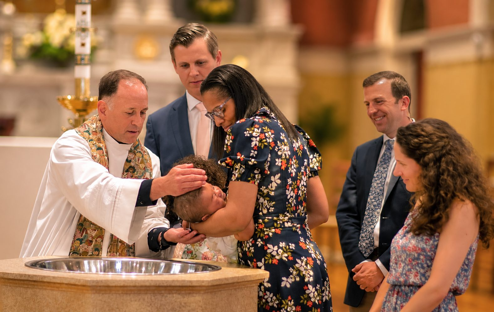
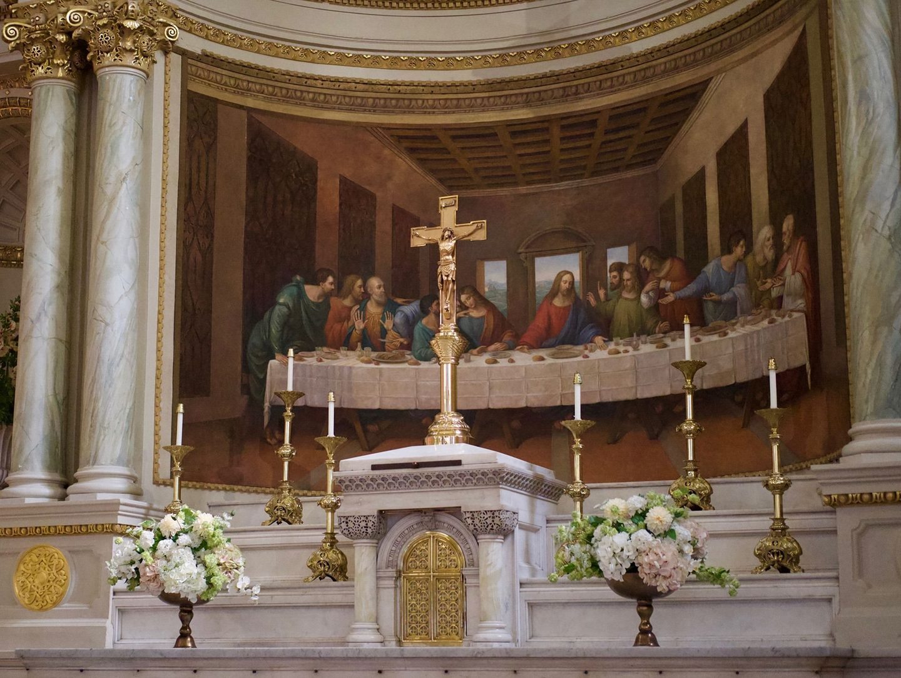
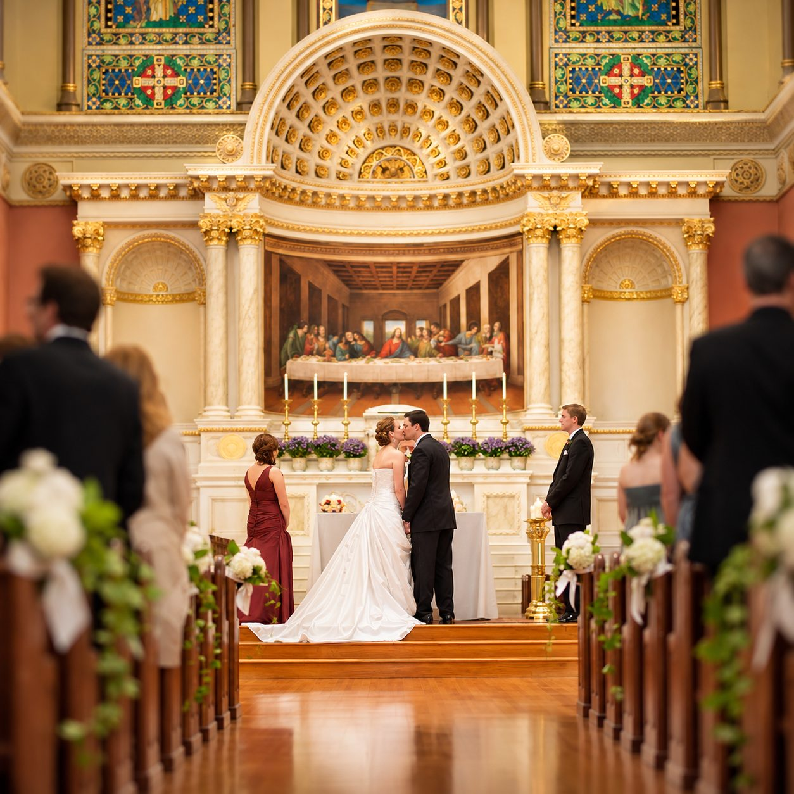
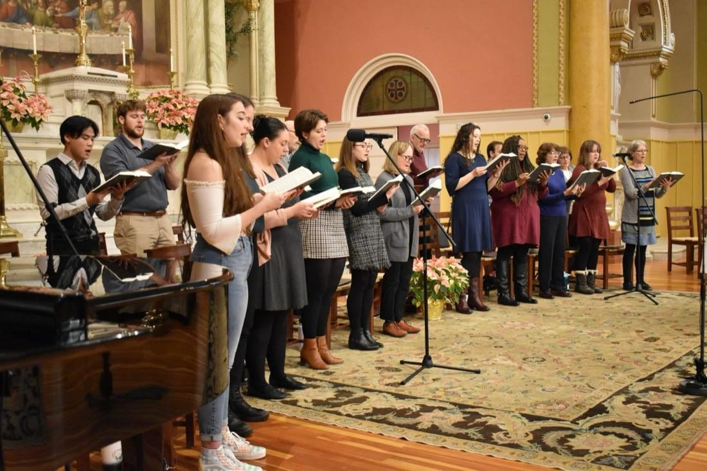
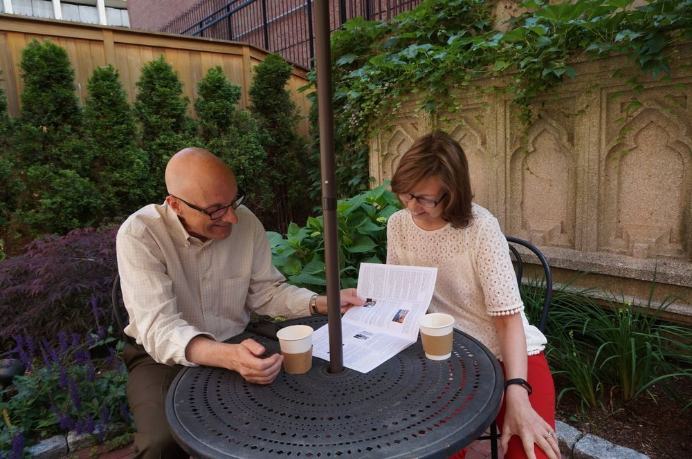
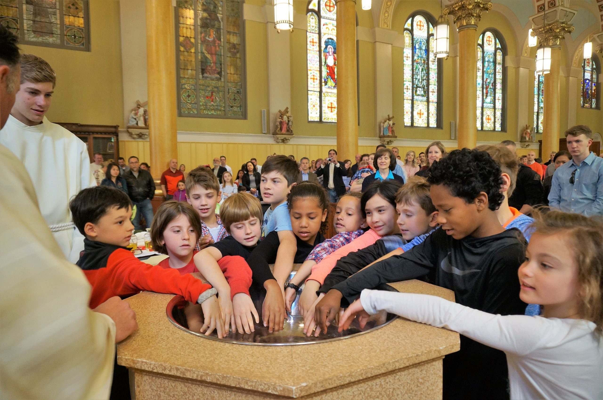

-
Weekly Bulletin
Current issue & 12-mo archive
-
Join Saint Cecilia
Online registration for newcomers
-
Faith Information
Youth & sacrament prep
-
Online Giving
Support Parish Stewardship
Our Identity & Mission
Rooted in Tradition, Opened Wide to the World
For over a century in Boston's Back Bay, Saint Cecilia Parish has been a beacon of Catholic faith, intellectual engagement, and compassionate outreach. As a parish of the Archdiocese of Boston, we strive to be a sacrament of Christ’s loving presence.
What We Stand For & History
Every season of life,
celebrated here.
At Saint Cecilia, faith is expressed in authentic community, active social justice, and inclusive fellowship for every season of life.
First Communion & Confirmation

Weddings
Funerals & Memorials
Becoming Catholic (OCIA)
Welcoming All to Christ’s Table
Mass & reconciliation times
Accurate service hours for our Back Bay parish. Come join our community for prayer and the holy celebration of the Eucharist.
Prefer a private confession? Call the parish office to book a time with the pastor.
5:00 PM
Saturday Vigil Mass
English Mass fulfilling the Sunday obligation.
8:00 AM
Sunday Early Mass
Quiet Mass with organ prelude.
10:00 AM
Sunday Solemn Mass
Full parish choir, with live broadcast.
5:00 PM
Sunday Youth & Evening Mass
Contemporary liturgical music ensemble.
8:30 AM
Weekday Morning Mass
Monday to Friday in the main church.
12:10 PM
Midday Mass
Wednesdays, in the Lady Chapel.
7:00 PM
First Friday Mass
Followed by a holy hour.
3:30 PM
Saturday Confessions
Until 4:30 PM, in the confessionals by the side altar.
7:30 PM
Communal Penance Service
During Advent and Lent, with several priests.
Any day
Private Confession
Call the parish office to book a time with the pastor.
9:00 AM
First Friday Adoration
Until Benediction at 5:00 PM.
6:00 PM
Thursday Holy Hour
Quiet prayer before the Blessed Sacrament.
Active Community
Parish Ministries & Life
At Saint Cecilia, faith is expressed in authentic community, active social justice, and inclusive fellowship for every season of life.

Liturgical Music
Adult choir, youth musicians, cantors and the sacred concert series.
Contact the music officeOutreach & Mercy
Saint Vincent de Paul, soup kitchen, and Catholic Social Teaching initiatives.
Get Involved & ServeSafe Environment
Mandatory volunteer screening, background checks, and child protection guidelines.
Volunteer Requirements
Far-Flung Flock
Connecting remote parishioners, homebound members, and virtual small groups.
Connect OnlineThis season at Saint Cecilia

Youth ministry
2026-2027 Children’s Faith Formation
Enrollment is open for First Communion, Confirmation and Sunday School classes.
Register OnlinePastor's weekly note
Reflecting on the Advent liturgy
“As we enter this holy season, let us prepare our hearts for the joy of Christ’s coming through prayer and fellowship.”Read in this week’s bulletin
Today’s reading
“The Lord is my shepherd; I shall not want.”Read the full readings at USCCB.org
Community outreach
Food Pantry Holiday Drive
Our Saint Vincent de Paul outreach is collecting non-perishable food and holiday supplies for local families.
See needed itemsWorldwide Parish Community
Remote Congregation Hub
Unable to attend in person? Participate in Mass, download the Sunday Worship Aid, and stay connected with our parish.
~10,000weekly views from around the world
Your gift keeps the doors open on Belvidere Street.
Your generosity sustains our liturgical worship, faith formation programs, parish maintenance, and charitable outreach in the community.
One-Time Offertory
Quick, secure online contribution for Sunday offertory or special collections.
Give One-TimeiGive Recurring Giving
Set up convenient weekly or monthly automated bank draft / credit card giving.
Set Up RecurringEstate Planning
Remember Saint Cecilia Church in your will or legacy estate planning.
Contact Business Manager